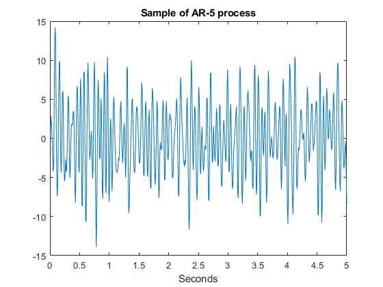
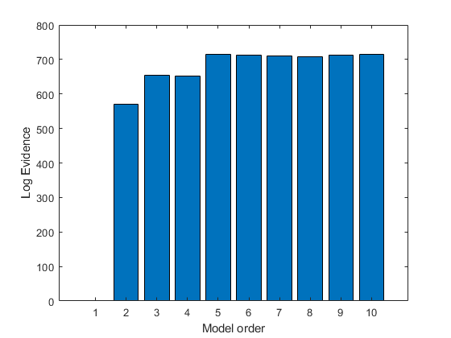

secs=5;
ns=128;
t=[1/ns:1/ns:secs];
N=length(t);
noise_var=1^2;
noise=sqrt(noise_var)*randn(1,N);
a_true=[-1.8517,1.3741,0.1421,-0.6852,0.3506];
y=filter(1,[1,a_true],noise);
y=y(1:N);
figure
plot(t,y);
xlabel('Seconds');
title('Sample of AR-5 process');
total_variance=std(y)^2;
signal_variance=total_variance-noise_var;
snr=sqrt(signal_variance)/sqrt(noise_var);
disp(sprintf('SNR=%1.3f',snr));
disp('For model order p=5');
ar=spm_ar (y,5);
disp(' ');
disp('True coefficients');
disp(a_true);
disp(' ');
disp('Estimated coefficients');
disp(ar.a_mean');
for p=1:10,
disp(sprintf('Now fitting model with p=%d coefficients',p));
ar=spm_ar (y,p,0);
logev(p)=ar.fm;
end
logev=logev-min(logev);
figure
bar(logev);
ylabel('Log Evidence');
xlabel('Model order');
SNR=4.544
For model order p=5
True coefficients
-1.8517 1.3741 0.1421 -0.6852 0.3506
Estimated coefficients
-1.8771 1.3646 0.2713 -0.8573 0.4363
Now fitting model with p=1 coefficients
Now fitting model with p=2 coefficients
Now fitting model with p=3 coefficients
Now fitting model with p=4 coefficients
Now fitting model with p=5 coefficients
Now fitting model with p=6 coefficients
Now fitting model with p=7 coefficients
Now fitting model with p=8 coefficients
Now fitting model with p=9 coefficients
Now fitting model with p=10 coefficients
 